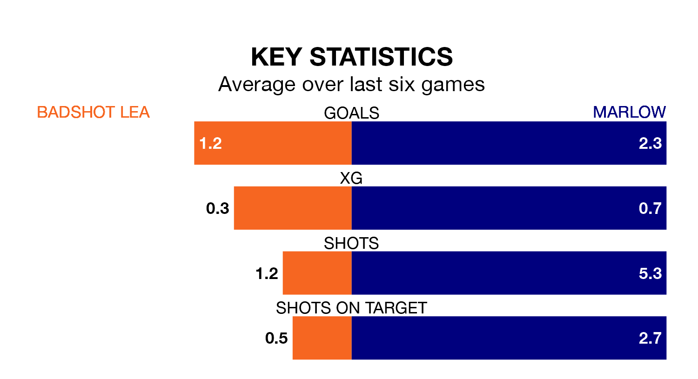

Marlow visit Badshot Lea at the Westfield Lane Stadium on late Tuesday on the back of three consecutive wins in Isthmian League Division One South Central.
Marlow have picked up nine points from their last six games, and they face a Badshot Lea side who drew their last match, and have collected four points from the last possible 18.
With 52 goals in 19 games so far this season, Marlow are the league's second-highest scorers with 2.7 goals per game. And they are conceding fewer than average, letting in 25 goals at a rate of 1.3 per game.
Badshot Lea, meanwhile, are average scorers, with 1.7 goals per game. They have conceded 1.6 goals per game.
The visitors are fifth in the table after 19 games, of which they have won 13 and drawn one, earning 40 points.
The home side are six places behind Marlow in 11th, with nine wins and four draws putting them on 31 points.
Badshot Lea's last match was on Saturday, a 1-1 draw against Metropolitan Police.
Marlow beat Uxbridge 3-1 last time out, also on Saturday.
Updated: 15:34, 08/01/24